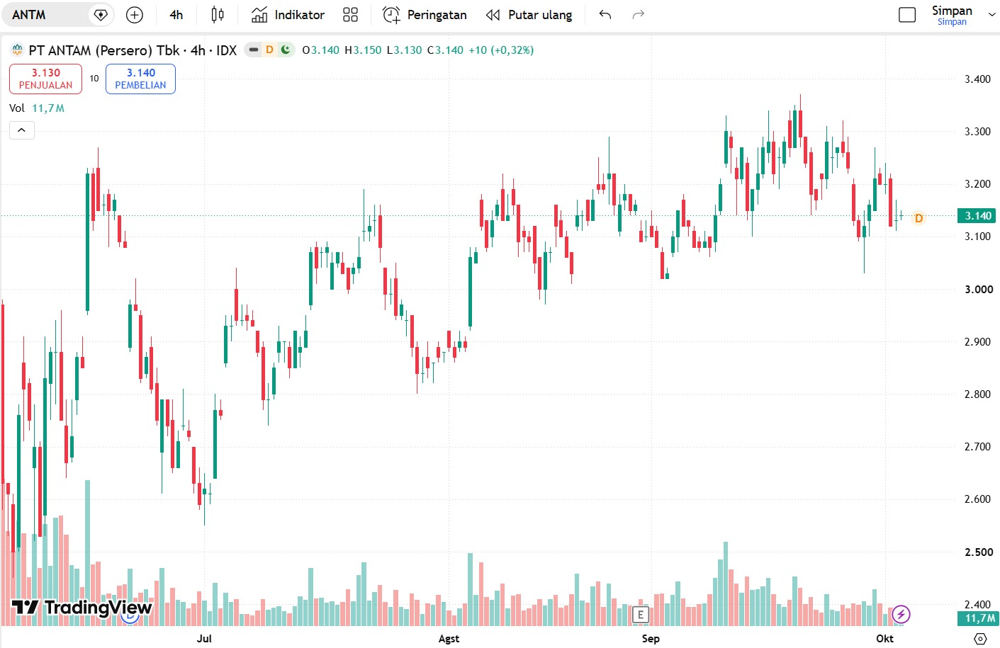

Detail Transaksi: ANTM (PT Aneka Tambang Tbk)
| Tanggal Beli | 2026-09-24 |
|---|---|
| Harga Beli | Rp 1.590 |
| Jumlah Lot | 30 |
| Total Nilai | Rp 4.770.000 |
| Sekuritas | Stockbit |
| Status | Jual |

Narasi Evaluasi
Saham ANTM dibeli pada harga 1.590 sebanyak 30 lot dengan total nilai Rp 4.770.000, dengan mempertimbangkan pergerakan harga komoditas dan momentum teknikal saham.
Sejak awal ditetapkan level Take Profit dan Cut Loss untuk membatasi risiko, karena saham sektor tambang cenderung bergerak volatil.
Posisi kini berstatus Jual, artinya transaksi sudah ditutup. Hasilnya dicatat sebagai bahan evaluasi untuk transaksi berikutnya.